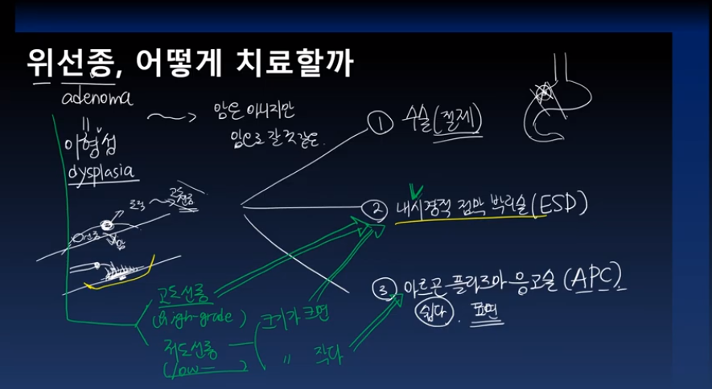

기역과 함께하는 깊이있는 의학공부
헬리코박터 제균치료시 양성자펌프억제제를 사용하는 이유 youtube
헬리코박터 감염 어떻게 알 수 있는가 - 요소호기검사에 관하여 youtube

헬리코박터 파일로리 - 감염의 3단계 youtube

헬리코박터 파일로리는 어떻게 위에서 살 수 있을까 youtube

헬리코박터 파이로리에 대한 종합적 안내 youtube

과민성장증후군이 발생하는 이유는 무엇인가? 7가지의 설명 youtube

과민성장증후군이란 무엇인가 youtube

기능성 소화불량증, 원인과 치료 youtube

크론병은 무엇이며 어디에 발생하는가 youtube

크론병의 증상 youtube

위산분비의 조절기전, 각종 약제는 어떻게 작용하는가 youtube

위산분비의 조절기전 youtube
위벽은 위산을 잘 버틸수 있을까, 점액과 중탄산염 youtube

헬리코박터균은 어떻게 십이지장궤양을 일으키는가 youtube

위암수술, 위를 얼마나 잘라내는가 youtube
위암, 수술 못하는 경우들 youtube

위암의 병기(1) youtube
우리나라에서 내시경검사 꼭 받아야 하는 이유 youtube
위선종, 어떻게 치료할까 youtube

아르곤 플라즈마 응고술, 받을때 주의사항 youtube
아르곤 플라즈마 응고술, 시술자 유의사항 youtube
위암치료, 수술이 무조건 답은 아니다 youtube

이런 위암, 어떻게 치료해야 할까 youtube

비스테로이드성소염제(NSAID)는 어떻게 위궤양을 일으키는가 youtube

흡연은 어떻게 위궤양을 일으키는가 youtube

위궤양의 3대원인 youtube
보만4형 진행위암의 이름은 다섯개 youtube

위궤양, 조직검사 왜 하는가 youtube
폴립증후군이란 무엇인가 youtube

내시경시 항혈전제 사용, 끊어야 할까 말아야 할까 youtube
조기대장암의 내시경치료, 어떻게 하는 걸까 youtube
조기대장암이란 무엇인가 youtube

위암수술, 5년 지났다고 추적 안해도 될까 youtube
혈전증 vs 출혈, 누가 더 중요한가 youtube
위축성 위염이란 무엇인가 youtube
3040젋은사람도 대장암을 알아야 하는 이유 youtube

궤양성대장염 vs 당뇨 무엇이 더 심각한가 youtube